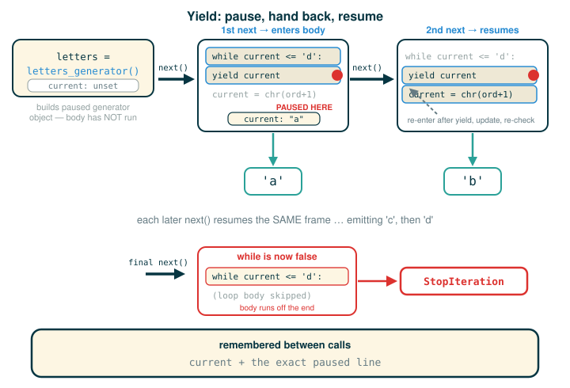

4.2.5 Generators and Yield Statements
So far you have used iterators that Python already knew how to build for you: list iterators, the lazy iterators returned by map and filter, and the iterators that a for loop pulls values from. In this lesson you learn to write your own one-at-a-time sequence producer from scratch.
The tool for that is a generator function: a function whose body contains a yield statement. By the end you will be able to recognize a generator function on sight, explain why calling one does not run its body, trace how each call to next resumes a paused function, and say exactly what happens when a generator runs out of values.
The one habit to build here is to stop reading a function with yield as if it ran top to bottom in one shot. It does not. It pauses, hands back a value, and waits to be asked for the next one.
A Storyteller Who Pauses
A normal function is like a microwave. You press start, it runs to completion, and one result comes out. The job is over.
A generator function is like a storyteller telling a story one sentence at a time. You say "next," and the storyteller speaks a single sentence, then stops and waits. You say "next" again, and they pick up exactly where they left off, remembering every character and every thread of the plot. They do not start the story over, and they do not rush ahead. They produce the next piece only when you ask for it, and eventually they reach "the end."
That image captures the two ideas that make generators work. A generator produces values one at a time, on request, and between requests it remembers its place — every local variable and the exact line it paused on.
What a Generator Function Is
A generator is an iterator returned by a special kind of function called a generator function. What separates a generator function from an ordinary function is simple: instead of using return statements to send back a single result, its body uses one or more yield statements to hand back the elements of a series.
This matters because of the problem it solves. When you built your own iterator objects by hand, you had to add a field like self.current to track your progress through the sequence, and your __next__ method had to carefully save and restore that place every time it was called. For simple sequences that is manageable. For complicated ones, manually bookkeeping "where was I?" inside __next__ becomes painful. A generator function lets you write the iteration as ordinary, straight-line code and leans on the Python interpreter itself to remember where execution paused.
So a generator does not use attributes of an object to track its progress. Instead, the generator keeps the paused function itself ready to continue. Here is how: the function runs until the next yield statement is reached each time the generator's __next__ method is invoked, then pauses there. The generator object that a generator function hands back already has both __iter__ and __next__ methods, even though you never wrote them — which is exactly why it works in a for loop with no extra effort.
return Versus yield
The contrast between these two words is the whole idea, so it is worth stating plainly.
The word return ends a function call and sends back one result. Once a function returns, that call is finished; there is nothing left to resume.
The word yield hands back one value but saves the function's place so it can continue later. The local variables stay alive, and the next line to run is remembered. The function is paused, not finished.
Here is the smallest contrast that shows the difference in behavior:
# (1)
def give_one_value():
return 10
def give_values_over_time():
yield 10
yield 20
yield 30
print(give_one_value())
generator = give_values_over_time()
print(next(generator))
print(next(generator))
print(next(generator))
Expected output:
10
10
20
30Read what each side does. give_one_value() runs its body once and return 10 produces the value 10; the call is over. give_values_over_time() is different: because its body contains yield, calling it does not run the body at all. It hands back a generator object, which we bind to the name generator. Each next(generator) then resumes the body, runs until the next yield, and produces that value — 10, then 20, then 30, on three separate requests.
Anatomy: the yield statement
Walk the tokens of the first yielding line in give_values_over_time:
yield 10
├─ yield ....... pause this function and hand a value back to the caller
├─ 10 .......... the value to hand back on this request
└─ action ...... produces 10, then suspends the function frame, remembering where to resumeThe single final row is the point: a yield statement does not end the function the way return does. It produces a value and suspends, leaving the frame ready to continue on the next next call.
The Official Letters Example
The original text introduces generators with a function that produces the letters 'a' through 'd'. Here is that example exactly as it appears, as an interactive session:
>>> def letters_generator():
current = 'a'
while current <= 'd':
yield current
current = chr(ord(current)+1)
>>> for letter in letters_generator():
print(letter)
a
b
c
dEven though we never explicitly defined __iter__ or __next__ methods, the yield statement is what marks this as a generator function. When you call it, it does not return a particular yielded value; it returns a generator, which is a kind of iterator, and that generator is what produces the yielded values. Because a generator object already has __iter__ and __next__ methods, the for loop can drive it directly, calling __next__ over and over, and each call continues the generator function from wherever it last left off until another yield runs.
Here is the same example as a program you can run, written with the double-quote string style this course uses:
# (2)
def letters_generator():
current = "a"
while current <= "d":
yield current
current = chr(ord(current) + 1)
for letter in letters_generator():
print(letter)
Expected output:
a
b
c
dHow the letters advance
The update line uses two built-in functions to step from one letter to the next. ord(current) converts a one-character string into its numeric Unicode code point, and chr(...) converts a code point back into a character. Adding 1 to the code point moves to the following letter.
Walk the tokens of the update line:
current = chr(ord(current) + 1)
├─ current ..... the name being reassigned
├─ = ........... bind the name on the left to the value on the right
├─ chr ......... built-in: turns a code point number back into a character
├─ ( ........... begins chr's input
├─ ord ......... built-in: turns a one-character string into its code point number
├─ ( ........... begins ord's input
├─ current ..... the current letter, for example "a"
├─ ) ........... ends ord's input
├─ + ........... addition operator
├─ 1 ........... move one step forward in the code points
├─ ) ........... ends chr's input
└─ action ...... rebinds current to the next letter, for example "a" becomes "b"So when current is "a", ord("a") + 1 is the code point for "b", and chr(...) turns it back into the string "b". The while loop repeats this until current passes "d", at which point the condition current <= "d" is false and the function runs off the end.
Walking the Generator by Hand
The original text walks through the same generator by calling __next__ manually, and watching that walk is the clearest way to see the pause-and-resume behavior. Here is that interactive session exactly as it appears:
>>> letters = letters_generator()
>>> type(letters)
<class 'generator'>
>>> letters.__next__()
'a'
>>> letters.__next__()
'b'
>>> letters.__next__()
'c'
>>> letters.__next__()
'd'
>>> letters.__next__()
Traceback (most recent call last):
File "<stdin>", line 1, in <module>
StopIterationSeveral things in that transcript are worth naming. Calling letters_generator() does not start executing any of the body statements; it only builds the generator object, which type(letters) confirms is a <class 'generator'>. The body does not begin running until the first time __next__ is invoked. The first __next__ call runs the body until it reaches yield current and returns 'a'. Crucially, a yield statement does not destroy the environment it paused in — it preserves it for later. So current and every other bound name in the scope of letters_generator survive across calls. The next __next__ call resumes right after the yield, runs the update line, checks the while condition again, and yields 'b', and so on. After 'd' is yielded, the next resume finds the while condition false, the generator function returns, and the generator raises StopIteration.
The same generator can be driven with next(letters), since next(letters) is just another way to write letters.__next__(). Here is an executable trace of the first two values:
# (3)
def letters_generator():
current = "a"
while current <= "d":
yield current
current = chr(ord(current) + 1)
letters = letters_generator()
print(next(letters))
print(next(letters))
Expected output:
a
bAnatomy: building the generator object
Look closely at the line that creates the generator, one token at a time:
letters = letters_generator()
├─ letters ........... the name we are binding
├─ = ................. bind the name on the left to the value on the right
├─ letters_generator . the generator function defined above
├─ ( ................. begins the (empty) inputs
├─ ) ................. ends the inputs and performs the call
└─ action ............ builds a generator object without running the body; binds letters to itThe final row is the surprise for most beginners. The call does not print "a" and it does not run the while loop. It only manufactures the paused generator object. Nothing in the body executes until something asks the object for a value.
Step-by-step: the suspended frame
Tracing the two next calls in (3) makes the saved state concrete. Watch the value of current and the line where execution pauses.
| Step | What runs | current |
Returned | Where it pauses |
|---|---|---|---|---|
letters = letters_generator() |
nothing in the body | (unset) | — | before the first line |
first next(letters) |
current = "a", enter while, yield current |
"a" |
"a" |
at yield current |
second next(letters) |
resume after yield, run the update, re-check while, yield current |
"b" |
"b" |
at yield current |
The generator remembers three things between calls: the value of current, the exact line where it paused, and the fact that it should continue after the most recent yield rather than restart from the top.

Exhaustion of a Generator
A generator is still an iterator, so like any iterator it can be used up. The original letters transcript above ended with a StopIteration after 'd'; the generator raises that exception whenever its generator function returns — that is, when the body runs off the end with no more yield statements to reach.
Here is a small, self-contained example that catches that exception so the program keeps running:
# (4)
def two_values():
yield "first"
yield "second"
values = two_values()
print(next(values))
print(next(values))
try:
print(next(values))
except StopIteration:
print("generator is exhausted")
Expected output:
first
second
generator is exhaustedAfter both yield statements have run, there is nothing left in the body to reach, so the third next(values) raises StopIteration. This is exactly the signal a for loop relies on: a for loop keeps calling next and treats StopIteration as "stop now." That is why the for loop over letters_generator() earlier ended cleanly after d without you writing any stopping logic yourself.
Generators Can Use Ordinary Control
Nothing about a generator function restricts the body to a single straight line of yield statements. The body is ordinary Python: it can use assignment, if statements, while loops, and any helper calculations you like. The letters_generator example already did this — it ran a while loop and reassigned current on every pass. Here is another example, a countdown, that makes the point with a parameter:
# (5)
def countdown(start):
current = start
while current > 0:
yield current
current = current - 1
for number in countdown(3):
print(number)
Expected output:
3
2
1The body reads like a normal loop. The only special ingredient is yield, which changes how values leave the function. Instead of computing one final answer and returning it, the function produces a whole sequence, one value per next call, pausing in between.
This is what makes generators worth learning. A generator function lets you describe a sequence without first building a list of every element. Compare the two strategies:
build a list first:
create empty list
append every value
return the full list
yield values:
compute one value
yield it
pause
compute the next value only when askedFor a short sequence, either approach works. For a huge sequence — or an endless one — yielding values one at a time is far more powerful, because the program never has to hold every value in memory at once. It computes each value only at the moment something asks for it.
⚠Common Beginner Traps
One trap is thinking that calling a generator function immediately runs the whole body. It does not. Calling it only builds a generator object; the body starts running on the first next call.
Another trap is reaching for return when you mean yield. return ends the function and the call is over. yield produces one value and pauses, ready to continue.
A third trap is assuming a generator can be restarted after it is exhausted. A generator object remembers its position, and once it reaches the end it stays at the end: every further next raises StopIteration and a second for loop over it produces no values at all. To iterate again, call the generator function a second time to get a fresh generator object.
A fourth trap is forgetting that a for loop consumes the generator as it goes. If you loop over the same generator object a second time, it will not start over — it is already used up.
A fifth trap is expecting yield to print anything. It does not. It hands a value back to whatever called next; printing is the caller's job.
✓Check Your Understanding
- A generator function
ghas a body ofyield 1, thenyield 2, thenyield 3. Aftergen = g(), what does each of the next two lines print:print(next(gen))thenprint(next(gen))? - What happens when Python reaches a
yieldstatement? - Why does
letters_generator()create a generator object instead of immediately printing letters? - What exception signals that a generator has no more values, and when is it raised?
- Why are generators useful for huge or unbounded sequences?
Show the answers
- It prints
1, then2. The callg()builds a paused generator object without running the body, so the firstnext(gen)runs to the firstyieldand produces1, and the secondnext(gen)resumes after thatyieldand runs to the next one, producing2. The third value3is never requested. - Python hands the yielded value back to the caller and suspends the function frame. The local variables and the next line to run are preserved for the next
nextcall; the environment is not destroyed. - Calling the generator function only builds the paused generator object. The body begins running when the program first asks that object for a value with
next(or__next__). StopIterationsignals that the generator has no more values. It is raised when the generator function returns — that is, when the body runs off the end with no furtheryieldto reach.- Generators compute each value only when it is requested, so the program can work with a long or never-ending sequence without storing every value in memory at once.
§Summary
A generator function is an ordinary-looking function whose body contains a yield statement, and calling it returns a generator — a kind of iterator with __iter__ and __next__ methods you never had to write. Each call to next (equivalently __next__) resumes the function from wherever it last paused, runs until the next yield, and produces that value; the generator preserves its local state and its paused location between calls rather than tracking progress in an object field. When the body finally returns, the generator raises StopIteration, which is exactly what a for loop watches for. Because values are produced one at a time on request, generators give you a direct, memory-light way to build lazy sequences in Python without ever assembling a full list.
▶Step-Through Checkpoint
This program is the lesson in miniature: one generator object, three separate requests for values. Stepping through it draws the environment diagram that makes the pause visible: the generator's own frame sits suspended at the yield, its local current persisting between next calls, while the global frame merely collects the values that frame hands back as it resumes. Before stepping through the block below, write down three predictions: how many times the line current = chr(ord(current) + 1) runs, what current holds in the generator's paused frame when the final line finishes (this last one is the tricky prediction — the value lives inside the paused frame, so picture where the storyteller stopped), and what third is bound to.
# (6)
def letters_generator():
current = "a"
while current <= "c":
yield current
current = chr(ord(current) + 1)
letters = letters_generator()
first = next(letters)
second = next(letters)
third = next(letters)
Step through it and check each prediction. Stepping over letters = letters_generator() binds letters to a generator object and runs none of the body. Each next(letters) then resumes the suspended frame, producing "a", "b", and "c". The update line runs only twice, and the run ends with the generator still paused at the yield, current and third both holding "c". current lives in the generator's frame, never the global one.